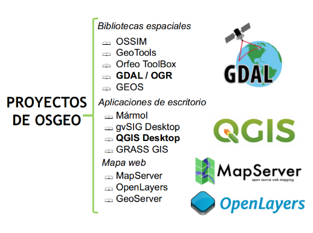
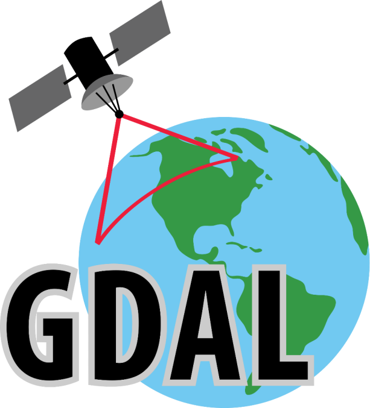

7 Introducción a datos espaciales
Un modelo de datos geográfico es una abstracción del mundo real que emplea un conjunto de objetos dato, para soportar el despliegue de mapas, consultas, edición y análisis. Los datos geográficos, presentan la información en representaciones subjetivas a través de mapas y símbolos, que representan la geografía como formas geométricas, redes, superficies, ubicaciones e imágenes, a los cuales se les asignan sus respectivos atributos que los definen y describen.
Un dato espacial es una variable asociada a una localización del espacio. Normalmente se utilizan datos vectoriales, los cuales pueden ser expresados mediante tres tipos elementales de objetos espaciales.
7.1 Datos Vectoriales
Los datos vectoriales son usados para representar espacialmente el mundo real y las variables asociadas a estas. Un objeto espacial vectorial puede ser de geometría tipo punto, línea o un polígono. Cada objeto espacial vectorial tienen datos de atributos que lo describen.

7.2 Datos Raster
En su forma más simple, un ráster consta de una matriz de celdas (o píxeles) organizadas en filas y columnas (o una cuadrícula) en la que cada celda contiene un valor que representa información, como la temperatura. Los rásteres son fotografías aéreas digitales, imágenes de satélite, imágenes digitales o incluso mapas escaneados.

7.3 ¿Qué es OGC?
El Open Geospatial Consortium (OGC) es una organización sin fines de lucro que fue fundado en 1994 para hacer de la información geográfica una parte integral de la infraestructura mundial de información. Agrupa (en mayo de 2019) a 527 miembros de organizaciones públicas y privadas (más información en https://www.ogc.org/ogc/members ). Los miembros de OGC (usuarios y proveedores de tecnología) desarrollan de forma colaborativa estándares de interfaz y los estándares asociados, así como buenas prácticas, que permiten a los desarrolladores crear sistemas de información que pueden fácilmente intercambiar información geográfica e instrucciones con otros sistemas de información. Los requisitos varían desde planificaciones complejas y control de satélites de observación terrestre a la visualización de sencillas imágenes cartográficas en la web, así como la codificación de la localización en apenas unos pocos bytes para geoetiquetado y mensajería. Un vistazo a los OGC Domain Working Groups (http://www.opengeospatial.org/projects/groups/wg) muestra el amplio espectro de la actividad actual en OGC.

7.4 ¿Qué es OSGeo?
Open Source Geospatial Foundation, es una organización no gubernamental sin fines de lucro cuya misión es apoyar y promover el desarrollo colaborativo de software, datos y educación geoespacial de código abierto.
Los proyectos mostrados en la siguiente figura ofrecen herramientas y tecnologías disponibles gratuitamente bajo una licencia de código abierto. Esta lista promueve el trabajo de equipos y organizaciones en todo el mundo. Los proyectos marcados como OSGeo Community se han unido a OSGeo, mientras que los marcados como OSGeo Project han sido objeto de una extensa tutoría con esta organización.

7.5 ¿Qué es GDAL?
Geospatial Data Abstraction Library (GDAL/OGR) proporciona herramientas de línea de comandos para traducir y procesar una amplia gama de formatos de datos geoespaciales ráster y vectoriales.
Sus herramientas se basan en una biblioteca multiplataforma escrita en C ++, accesible a través de numerosos lenguajes de programación. Como biblioteca, presenta un único modelo de datos abstracto a la aplicación que realiza la llamada para todos los formatos admitidos.
GDAL/OGR es la biblioteca de acceso a datos geoespaciales más ampliamente utilizada. Proporciona el motor principal de acceso a datos para muchas aplicaciones, incluyendo MapServer, GRASS, QGIS y OpenEV. También es utilizado por paquetes como OSSIM, Cadcorp SIS, FME, Google Earth, VTP, Thuban, ILWIS, MapGuide y ArcGIS.

Características Principales
- Su última versión es la 3.3.1.
- Es un software libre de código abierto, licenciado bajo una licencia de estilo MIT/X.
- Con la versión GDAL 2.0, se integraron los componentes GDAL y OGR.
- Compatible con sistemas operativos como Windows, IOS y UNIX.
- Utilidades de línea de comandos para la traducción de datos, deformación de imagen, subconjunto y otras tareas comunes.
- Acceso a datos ráster altamente eficiente, aprovechando el mosaico y las vistas generales.
- Soporte para archivos de gran tamaño - más de 4 GB.
- Acceso a la biblioteca desde Python, Java, C#, Ruby, VB6 y Perl.
- Motor de sistema de coordenadas basado en PROJ.4 y descripciones de sistema de coordenadas con Well Known Text (WKT) de OGC.
Formatos Popularmente Compatibles
GDAL soporta más de 140 formatos ráster y OGR con más de 80 formatos de vector.
Éstas incluyen:
- Raster: GeoTIFF, Erdas Imagine, SDTS, ESRI Grids, ECW, MrSID, JPEG2000, DTED, NITF, GeoPackage y más …
- Vector: GeoPackage, ESRI Shapefile, GML, GeoJSON, AutoCAD DWG, MapInfo (tab y mid / mif), ESRI Coverage, ESRI Personal Geodatabase, DGN, PostGIS, Oracle Spatial, y más …
7.6 ¿Qué es Proj?
PROJ es un software de transformación de coordenadas genérico que transforma las coordenadas geoespaciales de un sistema de referencia de coordenadas (CRS) a otro. Esto incluye proyecciones cartográficas y transformaciones geodésicas.
PROJ incluye aplicaciones de línea de comandos para una fácil conversión de coordenadas de archivos de texto o directamente desde la entrada del usuario. Además de las utilidades de la línea de comandos, PROJ también expone una interfaz de programación de aplicaciones, o API en resumen. La API permite a los desarrolladores usar la funcionalidad de PROJ en su propio software sin tener que implementar una funcionalidad similar ellos mismos.
PROJ comenzó simplemente como una aplicación de cartografía que permitía a los usuarios convertir coordenadas geodésicas en coordenadas proyectadas utilizando una serie de proyecciones cartográficas diferentes. A lo largo de los años, a medida que la necesidad se ha hecho evidente, el apoyo para cambios de datum también se ha abierto camino lentamente en PROJ. Actualmente, PROJ admite más de cien proyecciones de mapas diferentes y puede transformar coordenadas entre datums utilizando todas las técnicas geodésicas, excepto las más oscuras.
Para obtener más información, visite el sitio web del proyecto o consulte su documentación en formato PDF.